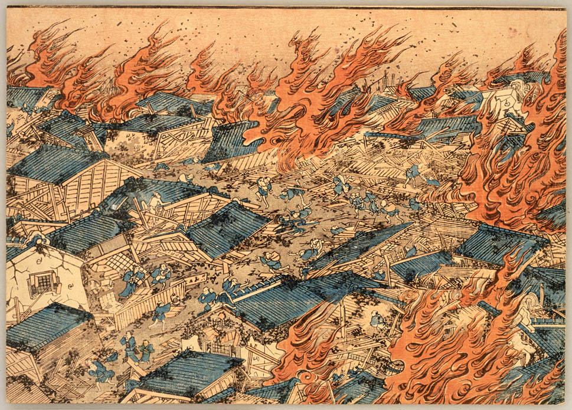

Akihabara (秋葉原) é uma abreviação de Akibagahara (秋葉が原), cujo significado é “campo de folhas do outono”. Hoje em dia, é comum as pessoas chamarem o bairro apenas de Akiba (アキバ), em homenagem a um santuário construído após um grande incêndio que devastou uma grande área de Tóquio em 1869. O objetivo do santuário era de proteger a região de novos incêndios.
O incêndio começou no décimo oitavo dia do ano, no distrito de Hongō, em Edo, e se espalhou rapidamente pela cidade, devido aos ventos com força de furacão que sopravam de noroeste. Edo, como a maioria das cidades e vilas japonesas da época, e como a maioria das cidades do Leste Asiático, foi construída principalmente de madeira e papel.
Os edifícios estavam especialmente secos devido à seca do ano anterior, e as estradas e outros espaços abertos entre os edifícios eram pequenas e estreitas, permitindo que o fogo se alastrasse e aumentasse de forma particularmente rápida.(Muitas cidades na Europa tiveram problemas semelhantes, sendo construídas com material inflamável; Londres iria queimar apenas nove anos depois.)
Embora Edo tivesse uma brigada de incêndio designada, o Hikeshi (火 消 し, "extintor de incêndio"), tinha sido estabelecido apenas 21 anos antes e simplesmente não era grande o suficiente, experiente o suficiente ou bem equipado o suficiente para enfrentar tal incêndio.
Na segunda noite, os ventos mudaram e o fogo foi empurrado da extremidade sul da cidade de volta ao centro. As casas dos lacaios mais próximos do shōgun, em Kōjimachi, foram destruídas quando o fogo atingiu o castelo Edo, bem no centro da cidade. Por fim, a fortaleza principal foi salva, mas a maioria dos edifícios externos e todas as casas dos lacaios e servos foram destruídos. Finalmente, no terceiro dia, os ventos cessaram, assim como as chamas, mas a fumaça densa impediu o movimento pela cidade, a remoção dos corpos e a reconstrução por vários dias.